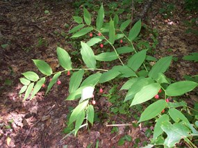
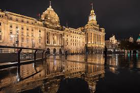
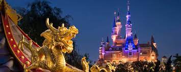
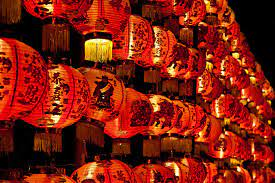
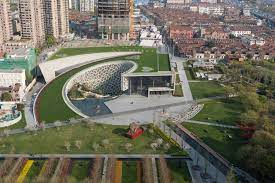
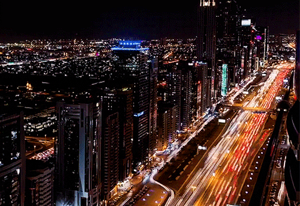
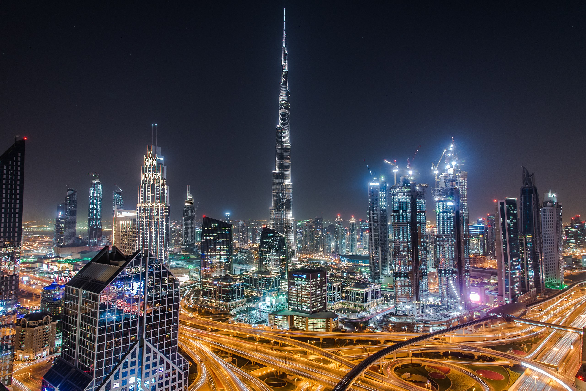
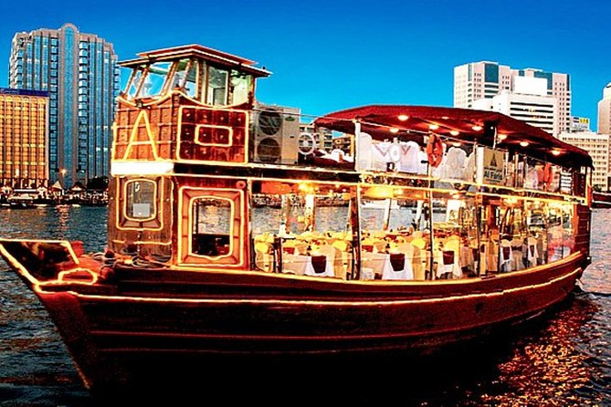
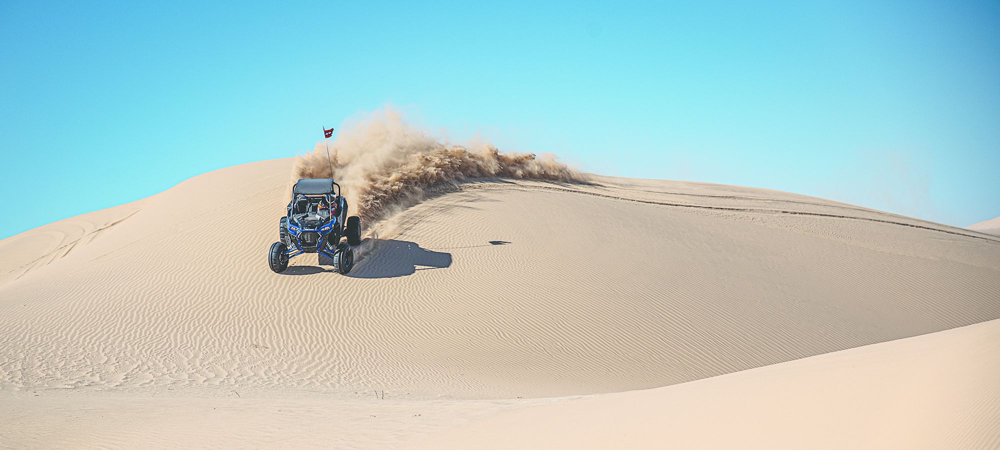
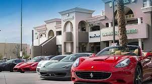

Apostle Islands, WI


Geographical Location:
North America
Breif description
The Apostle Islands are a collection of 22 islands in Lake Superior located in the northern region of Wisconsin, USA. Originally inhabited by the Ojibwe (Chippewa) people, the islands contain over hundreds of years worth of rich Native American history. In 1970, 21 of the islands and the surrounding waters were designated as the Apostle Islands National Lakeshore, a protected area managed by the National Park Service. Lastly, the islands are home to a diverse range of wildlife, including, white-tailed deer, black bears and various bird species.
There are six lighthouses spread across the islands, making it one of the largest collections of lighthouses in the United States. When the island receives visitors it is viewed as a popular destination for outdoor activities such as kayaking, sailing, hiking and camping. In addition, many people enjoy other activities such as berry picking. Camping is also allowed in 19 of the 21 islands to date.
Photo Gallery
In winter, when the lake freezes, the sea caves turn into ice caves. This can create a magical, otherworldly landscape!

Apostle Islands Lighthouses

The northern lights can be viewed from the Apostle Islands

American marten, endangered mammal native to the islands
White Manderin
Shanghai, China


Geographical Location:
Asia
Breif description
Shanghai, a vibrant metropolis, is nestled along the eastern coast of China. With a population of over 26 million, it ranks as one of the world's most populous cities and serves as a global financial hub. The cityscape of Shanghai is an exquisite blend of history and modernity, where towering skyscrapers such as the iconic Oriental Pearl Tower and the Shanghai Tower punctuate the skyline alongside historical landmarks like the Bund, a waterfront promenade that showcases colonial-era architecture.
The city has an unparalleled shoppign scene that caters to all tastes, from luxury brands in shiny malls to hidden gems in busy markets. Moreover, Shanghai's culinary landscape is a testament to its multiculturalism, offering a symphony of flavors that range from traditional street food like xiaolongbao (soup dumplings) to avant-garde dining experiences.
Photo Gallery
The Bund at night
Enchanted Storybook Castle at Shanghai Disneyland.
Shanghai’s famous soup dumplings
Hanging lanterns to celebrate Chinese New Year
Shanghai Natural History Museum Building
Rome, Italy


Geographical Location:
Europe
Breif description
The national capital of Italy remains a historical and political hub today. Nicknamed the “Eternal City,” Rome is considered the origination of the Catholic Church and Roman civilization central to the development of the Western World. Divided into 22 walled rioni (districts) surrounded by 35 quartieri urbani (urban sectors) that are surrounded by 6 large suburbi (suburbs), the city, just larger than New York City at an area of 496 mi2, is home to 2.8 million residents. Its economy runs on the tourism and services industries, the latter mostly in government jobs.
The Via del Corso, named after Roman carnival horse races, is the main street that runs through Rome. Many significant churches, palaces, and squares run along this road (Piazza del Popolo, and the Spanish Steps in Piazza di Spagna, for example). The seven hills that surround Rome are trenched with mythological history which can be seen through the prevalence of temples. Must see landmarks for those traveling include the Colosseum, Roman Forum, Pantheon, and Catacombs. St. Peter’s Square & Basilica and the Sistine Chapel, technically located within Vatican City – an independent city-state within Rome – are also worth a visit.
Photo Gallery

Rome is located in the western-central region of Italy, about 15 miles inland from the neighboring Tyrrhenian Sea

Nested within the Tiber river, the seven hills of Rome both give rise to another nickname and mark the ancient boundaries of the city.

Built in 80 AD, the Colosseum was built as an amphitheater for entertainment, and hosted gladiatorial combat and animal fights for over 400 years.

Because of ancient Roman law dictating the deceased not to be buried within the city, the labyrinthian tunnels of the Catacombs of Rome stretch for over 12 miles outside city limits

The largest domed temple built in its time, the interior of the Pantheon is illuminated by natural light flowing through a circular oculus and features colored marble and vast columns.
Dubai

Geographical Location:
Asia
Breif description
Dubai, a city known for its impressive structures like Burj Khalifa and Palm Jumeirah, combines advanced technology with modern architecture. The city hosts Dubai Internet City, where big tech companies and startups collaborate, aiming to become smarter by using technologies like blockchain to enhance government processes. Additionally, Dubai's plans to implement 3D printing for constructing buildings represent a major step into the future.
Exploring Dubai means not only admiring its remarkable buildings but also understanding how it leverages technology to transform operations. The city's approach encompasses both architectural marvels and innovative tech solutions, making it an exciting prospect for individuals curious about the intersection of technology and urban development.
Photo Gallery
Beatiful skyline of dubai in the nighttime that is a once in a lifetime view

This is one of the tallest buildings in the world. With its impressive architecture and height, the Burj Khalifa stands as a marvelous tourist attractions in Dubai.
A tourist attraction where people can ride boats around Dubai.
The sand dunes that beautifully shape the Dubai landscape are commonly utilized as bumpy and exciting terrain for people looking for a wild ride on a dune buggy.
Car company with many luxurious cars for rental in Mariana